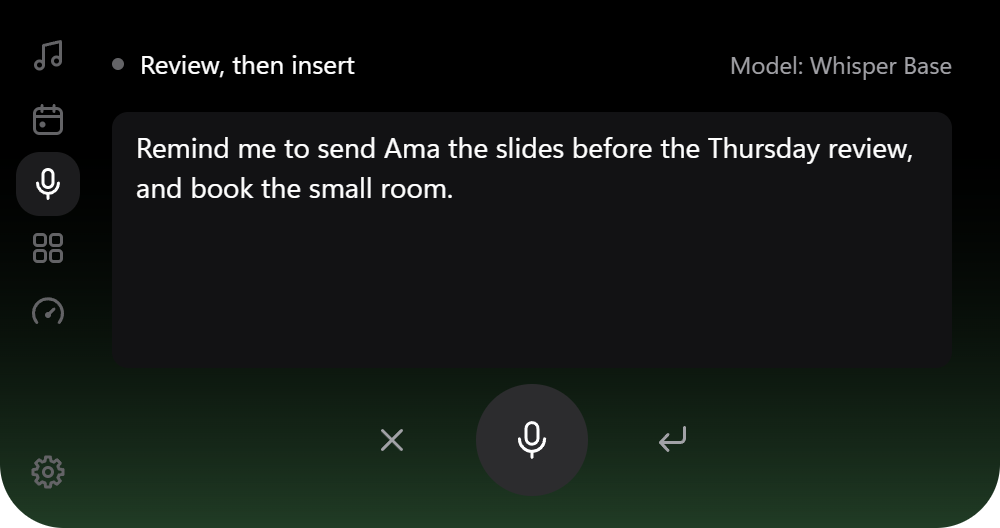
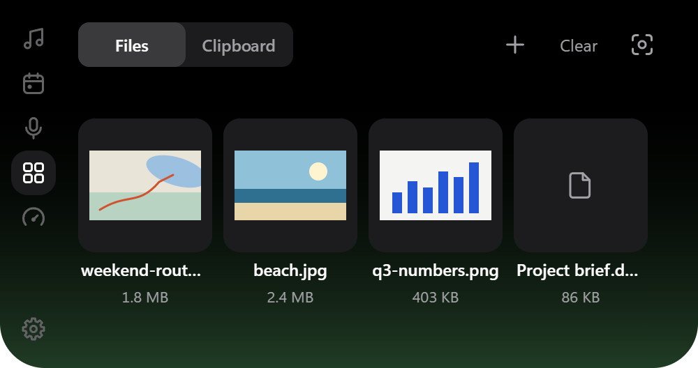
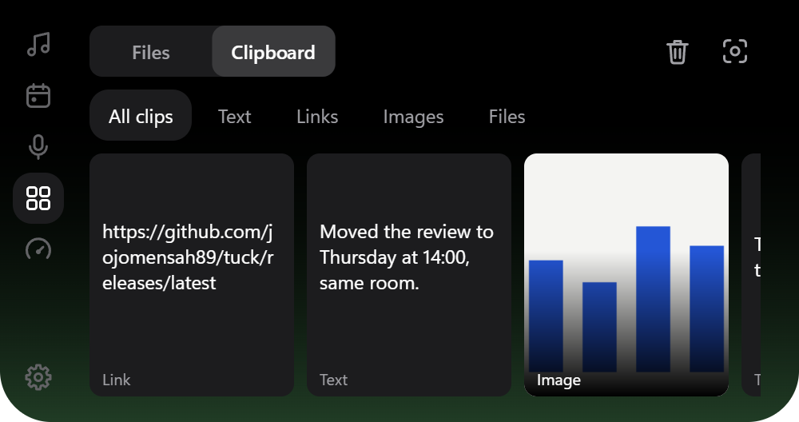
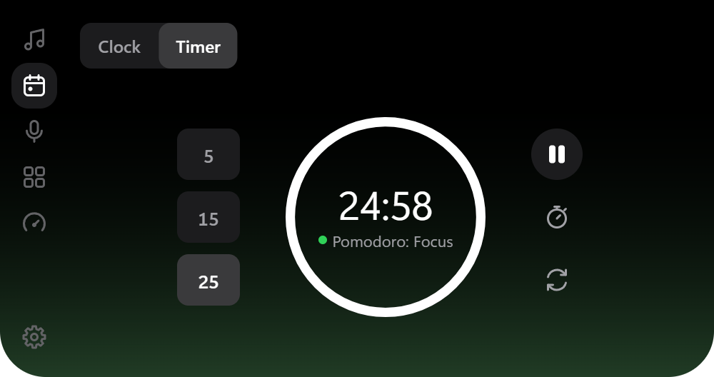
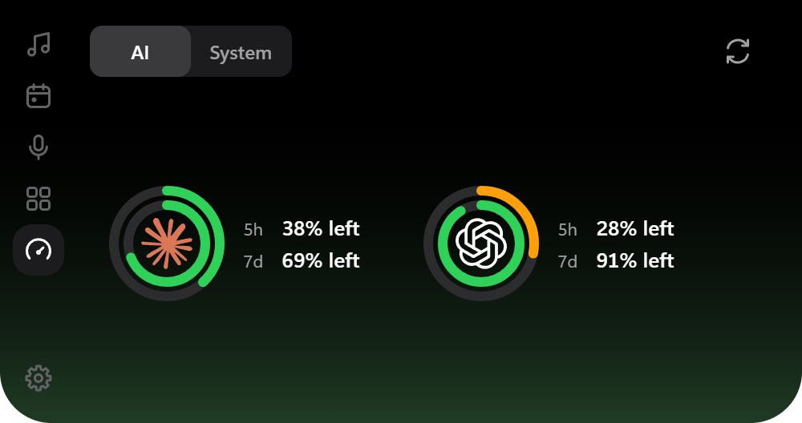
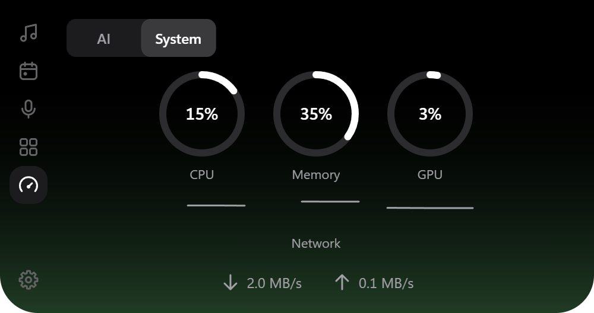

Music and its lyrics
Anything that shows in the Windows media overlay: Spotify, Apple Music, YouTube in a browser. Skip, pause and seek without finding the window.
Synced lyrics come from LRCLIB. Click a line to jump to it.
Tuck hangs from the top edge of your screen with music and lyrics, offline dictation, clipboard history, timers and AI usage. Free and open source.
Version 0.3.0, 4.1 MB, for Windows 10 and 11 on x64.
The page takes its colour from the artwork playing in Tuck. Skip a track to change it.
Tuck rests as a small black shape at the top of the screen and draws nothing while nothing changes. Point at it and it opens.
Anything that shows in the Windows media overlay: Spotify, Apple Music, YouTube in a browser. Skip, pause and seek without finding the window.
Synced lyrics come from LRCLIB. Click a line to jump to it.

Hold a shortcut, speak, let go. Whisper or Parakeet turns it into text on your own processor, and Tuck types it where your cursor is.
With no text box focused it copies the text and says so. Nothing is sent anywhere.

Drop files on the island to keep them close while you work, then drag them out into a chat, an email or a folder.
The shelf remembers where files live. It never moves or copies them.

Text, links, images and file paths you copied, as cards you can click to copy again or pin.
It is off until you turn it on, and forgotten when Tuck closes unless you choose to keep it.

A 5, 15 or 25 minute timer in one click, a stopwatch, and Pomodoro rounds that keep counting in the resting island.
The clock page shows the date and your battery.

Claude, Codex and Antigravity limits as rings: the five-hour window outside, the week inside. They drain as you use them.
Each provider is off until you switch it on, and only offered when its app is installed.

CPU, memory and graphics as rings, with download and upload speed read from Windows’ own counters.
Measured only while you are looking at it.
Download the installer from GitHub.
One file, Tuck_0.3.0_Setup.exe, about 4.1 MB. Tuck installs for your user only.
Windows will warn you about it.
Tuck is new and not yet signed with a paid certificate, so SmartScreen does not know it. Choose More info, then Run anyway.
It appears at the top of your screen.
A short welcome asks whether to start with Windows, track AI usage and pick a dictation model. Every answer can change later.
GitHub computes this fingerprint of the installer itself. In PowerShell, Get-FileHash .\Tuck_0.3.0_Setup.exe should print the same.
a5dad97d66cfde0ca89384d9006b3a9877026a863fbe56edfb0d46a5de44bf15Updates are signed, and Tuck checks the signature before it installs one. That signature does not remove the SmartScreen warning; only a code-signing certificate will.
Is it free? Yes. Tuck is MIT licensed and the whole source is on GitHub. The speech models keep their own licences.
Which music players work? Any that appears in the Windows media overlay, including Spotify, Apple Music, Windows Media Player and most players in Chrome, Edge and Firefox.
Why does a song have no lyrics? Lyrics come from LRCLIB, a free community library. Most popular songs have synced lyrics; some newer or local ones do not yet.
Does dictation need the internet? Only once, to download the model you choose from Hugging Face. After that it runs on your processor. It needs a CPU with AVX2, which most PCs from the last ten years have.
What leaves my PC? Update checks go to GitHub, model downloads to Hugging Face, and track details to LRCLIB when lyrics are on. With Claude or Codex switched on, their own apps report your limits and may contact Anthropic or OpenAI. Antigravity, if you confirm it, contacts Google for your quota. Nothing else, and no analytics.
Where is my clipboard kept? In memory, gone when Tuck closes. With Keep after restart on, in Tuck’s own app data, capped at 256 MB. Clear all keeps pins; turning history off deletes everything.
Does it get in the way of games or films? It hides when an app goes full screen on its monitor, and clicks pass through everywhere outside the island.
Notch or floating? Either. It can hang from the screen edge like a notch or float a little below it as a pill.
How do I update? Tuck checks about 20 seconds after it starts and every six hours, then shows one alert. Download and restart are separate clicks.
How do I quit it? Right-click the Tuck icon in the system tray and choose Quit. The same menu opens Settings, where Start with Windows can be turned off.
Does it run on a Mac? No. It is built for Windows 10 and 11 on x64 and needs the WebView2 runtime, which Windows already includes.
Put it at the top of your screen and forget about it until you need it.